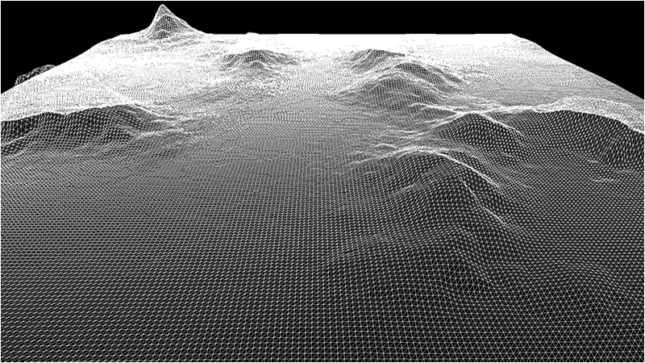

This tutorial will cover how to implement bitmap height maps for representing terrain in 3D using DirectX 11 and C++.
The code in this tutorial will be based on the previous terrain tutorial.
For this tutorial we will replace the last tutorial's grid code with new height map code.
The code will be changed to read in the bitmap height map and then elevate each point on the grid so that it matches the height map elevations.
It will then produce the following 3D terrain:

Height maps are a mapping of height points usually stored in an image file.
One of the common methods for storing height maps is using the bitmap file format and storing the height of the terrain in each pixel using a value from 0-255 (with 0 being the lowest height of the terrain and 255 being the maximum height).
Grey scale bitmaps lend themselves well to representing terrain since you can use the intensity of the grey color to represent the height.
This also makes them very easy to edit and manipulate with painting programs or mathematical algorithms.
For this tutorial we will use the following bitmap height map:

To generate your own height maps there are a number of terrain generation programs that are available such as World Machine and Terragen.
You can also use noise filters available in many painting programs such as Photoshop to create height maps.
And finally you can write your own height map generator using algorithms such as Perlin Noise to produce fairly realistic terrain.
Setup.txt
One of the first changes for this tutorial is that we now initialize our terrain using a text file named setup.txt.
This file will contain all of the parameters needed to generate our terrain.
At first it will only contain the filename, dimensions, and height scaling value.
However this will evolve to contain more information as the terrain becomes more elaborate in the future tutorials.
Terrain Filename: ../Engine/data/heightmap.bmp
Terrain Height: 257
Terrain Width: 257
Terrain Scaling: 12.0
The reason we use these files is so that we don't need to hard code any of this information in our programs.
It allows us, as well as other people you are working with, to quickly make changes and see the output without requiring a re-compile of the software.
All they need to do is edit the text file and re-run the executable.
In the software industry this is called data driven design.
Terrainclass.h
The TerrainClass has had a number of modifications to it so that it now supports bitmap height maps.
////////////////////////////////////////////////////////////////////////////////
// Filename: terrainclass.h
////////////////////////////////////////////////////////////////////////////////
#ifndef _TERRAINCLASS_H_
#define _TERRAINCLASS_H_
We have included some libraries in the TerrainClass for handling file reading for us.
//////////////
// INCLUDES //
//////////////
#include <d3d11.h>
#include <directxmath.h>
#include <fstream>
#include <stdio.h>
using namespace DirectX;
using namespace std;
////////////////////////////////////////////////////////////////////////////////
// Class name: TerrainClass
////////////////////////////////////////////////////////////////////////////////
class TerrainClass
{
private:
struct VertexType
{
XMFLOAT3 position;
XMFLOAT4 color;
};
We also have a couple new structures for the height map and for the 3D terrain model we will build from the height map.
struct HeightMapType
{
float x, y, z;
};
struct ModelType
{
float x, y, z;
};
public:
TerrainClass();
TerrainClass(const TerrainClass&);
~TerrainClass();
bool Initialize(ID3D11Device*, char*);
void Shutdown();
bool Render(ID3D11DeviceContext*);
int GetIndexCount();
private:
We have a number of new private functions for loading and releasing the bitmap height map as well as the 3D terrain model.
bool LoadSetupFile(char*);
bool LoadBitmapHeightMap();
void ShutdownHeightMap();
void SetTerrainCoordinates();
bool BuildTerrainModel();
void ShutdownTerrainModel();
bool InitializeBuffers(ID3D11Device*);
void ShutdownBuffers();
void RenderBuffers(ID3D11DeviceContext*);
private:
ID3D11Buffer *m_vertexBuffer, *m_indexBuffer;
int m_vertexCount, m_indexCount;
There are also new private variables for the terrain dimensions, the bitmap map file name, the height map array, and the 3D terrain model array.
int m_terrainHeight, m_terrainWidth;
float m_heightScale;
char* m_terrainFilename;
HeightMapType* m_heightMap;
ModelType* m_terrainModel;
};
#endif
Terrainclass.cpp
////////////////////////////////////////////////////////////////////////////////
// Filename: terrainclass.cpp
////////////////////////////////////////////////////////////////////////////////
#include "terrainclass.h"
In the class constructor we initialize all the new private pointer variables to null.
TerrainClass::TerrainClass()
{
m_vertexBuffer = 0;
m_indexBuffer = 0;
m_terrainFilename = 0;
m_heightMap = 0;
m_terrainModel = 0;
}
TerrainClass::TerrainClass(const TerrainClass& other)
{
}
TerrainClass::~TerrainClass()
{
}
We have changed the Initialize function quite a bit.
In the previous tutorial all we did was call InitializeBuffers to build our terrain grid.
But now that we are building a 3D terrain from a bitmap height map file it will have a number of extra steps.
The first thing to note is that the function now takes as input a setupFilename string.
We are making the TerrainClass data driven, so we read in a setup file and build the terrain according to the data in that file.
The first function we call is LoadSetupFile which reads that setup.txt file and sets the file name, terrain dimensions, and height scaling.
The next function is LoadBitmapHeightMap which will open the bitmap file and load the pixel height data into the height map array.
After that we call SetTerrainCoordinates to set the correct X and Z coordinates and scale the height of the terrain.
Once those functions are done we can call BuildTerrainModel which takes the height map array we filled out and builds a proper 3D terrain model from that data.
After building the terrain model we call ShutdownHeightMap to release the height map array.
Then we call InitializeBuffers which loads the vertex and index buffer for rendering with the 3D terrain model instead of the line grid from the previous tutorial.
And once all that is done we call ShutdownTerrainModel to release the 3D terrain model memory since we have the data in the rendering buffers.
bool TerrainClass::Initialize(ID3D11Device* device, char* setupFilename)
{
bool result;
// Get the terrain filename, dimensions, and so forth from the setup file.
result = LoadSetupFile(setupFilename);
if(!result)
{
return false;
}
// Initialize the terrain height map with the data from the bitmap file.
result = LoadBitmapHeightMap();
if(!result)
{
return false;
}
// Setup the X and Z coordinates for the height map as well as scale the terrain height by the height scale value.
SetTerrainCoordinates();
// Now build the 3D model of the terrain.
result = BuildTerrainModel();
if(!result)
{
return false;
}
// We can now release the height map since it is no longer needed in memory once the 3D terrain model has been built.
ShutdownHeightMap();
// Load the rendering buffers with the terrain data.
result = InitializeBuffers(device);
if(!result)
{
return false;
}
// Release the terrain model now that the rendering buffers have been loaded.
ShutdownTerrainModel();
return true;
}
The Shutdown function now releases the 3D terrain model and height map if they haven't already been released before this function is called.
void TerrainClass::Shutdown()
{
// Release the rendering buffers.
ShutdownBuffers();
// Release the terrain model.
ShutdownTerrainModel();
// Release the height map.
ShutdownHeightMap();
return;
}
bool TerrainClass::Render(ID3D11DeviceContext* deviceContext)
{
// Put the vertex and index buffers on the graphics pipeline to prepare them for drawing.
RenderBuffers(deviceContext);
return true;
}
int TerrainClass::GetIndexCount()
{
return m_indexCount;
}
LoadSetupFile is a new function that takes in the setup.txt file and stores all the values so that we can construct the terrain based on what is in that file.
For now we are just reading in the bitmap height map file name, the terrain width and height, as well as the terrain height scaling value.
bool TerrainClass::LoadSetupFile(char* filename)
{
int stringLength;
ifstream fin;
char input;
// Initialize the string that will hold the terrain file name.
stringLength = 256;
m_terrainFilename = new char[stringLength];
if(!m_terrainFilename)
{
return false;
}
// Open the setup file. If it could not open the file then exit.
fin.open(filename);
if(fin.fail())
{
return false;
}
// Read up to the terrain file name.
fin.get(input);
while(input != ':')
{
fin.get(input);
}
// Read in the terrain file name.
fin >> m_terrainFilename;
// Read up to the value of terrain height.
fin.get(input);
while(input != ':')
{
fin.get(input);
}
// Read in the terrain height.
fin >> m_terrainHeight;
// Read up to the value of terrain width.
fin.get(input);
while (input != ':')
{
fin.get(input);
}
// Read in the terrain width.
fin >> m_terrainWidth;
// Read up to the value of terrain height scaling.
fin.get(input);
while (input != ':')
{
fin.get(input);
}
// Read in the terrain height scaling.
fin >> m_heightScale;
// Close the setup file.
fin.close();
return true;
}
LoadBitmapHeightMap is a new function that loads the bitmap file containing the height map into the new height map array.
Note that the bitmap format contains red, green, and blue colors.
But since this being treated like a grey scale image you can read either the red, green, or blue color as they will all be the same grey value and you only need one of them.
Also note that we use a 257x257 bitmap because we need an odd number of points to build an even number of quads.
And finally the bitmap format stores the image upside down.
And because of this we first need to read the data into an array, and then copy that array into the height map from the bottom up.
bool TerrainClass::LoadBitmapHeightMap()
{
int error, imageSize, i, j, k, index;
FILE* filePtr;
unsigned long long count;
BITMAPFILEHEADER bitmapFileHeader;
BITMAPINFOHEADER bitmapInfoHeader;
unsigned char* bitmapImage;
unsigned char height;
// Start by creating the array structure to hold the height map data.
m_heightMap = new HeightMapType[m_terrainWidth * m_terrainHeight];
if(!m_heightMap)
{
return false;
}
// Open the bitmap map file in binary.
error = fopen_s(&filePtr, m_terrainFilename, "rb");
if(error != 0)
{
return false;
}
// Read in the bitmap file header.
count = fread(&bitmapFileHeader, sizeof(BITMAPFILEHEADER), 1, filePtr);
if(count != 1)
{
return false;
}
// Read in the bitmap info header.
count = fread(&bitmapInfoHeader, sizeof(BITMAPINFOHEADER), 1, filePtr);
if(count != 1)
{
return false;
}
// Make sure the height map dimensions are the same as the terrain dimensions for easy 1 to 1 mapping.
if((bitmapInfoHeader.biHeight != m_terrainHeight) || (bitmapInfoHeader.biWidth != m_terrainWidth))
{
return false;
}
// Calculate the size of the bitmap image data.
// Since we use non-divide by 2 dimensions (eg. 257x257) we need to add an extra byte to each line.
imageSize = m_terrainHeight * ((m_terrainWidth * 3) + 1);
// Allocate memory for the bitmap image data.
bitmapImage = new unsigned char[imageSize];
if(!bitmapImage)
{
return false;
}
// Move to the beginning of the bitmap data.
fseek(filePtr, bitmapFileHeader.bfOffBits, SEEK_SET);
// Read in the bitmap image data.
count = fread(bitmapImage, 1, imageSize, filePtr);
if(count != imageSize)
{
return false;
}
// Close the file.
error = fclose(filePtr);
if(error != 0)
{
return false;
}
// Initialize the position in the image data buffer.
k=0;
// Read the image data into the height map array.
for(j=0; j<m_terrainHeight; j++)
{
for(i=0; i<m_terrainWidth; i++)
{
// Bitmaps are upside down so load bottom to top into the height map array.
index = (m_terrainWidth * (m_terrainHeight - 1 - j)) + i;
// Get the grey scale pixel value from the bitmap image data at this location.
height = bitmapImage[k];
// Store the pixel value as the height at this point in the height map array.
m_heightMap[index].y = (float)height;
// Increment the bitmap image data index.
k+=3;
}
// Compensate for the extra byte at end of each line in non-divide by 2 bitmaps (eg. 257x257).
k++;
}
// Release the bitmap image data now that the height map array has been loaded.
delete [] bitmapImage;
bitmapImage = 0;
// Release the terrain filename now that is has been read in.
delete [] m_terrainFilename;
m_terrainFilename = 0;
return true;
}
We also have a new function to release the height map that was created in the LoadBitmapHeightMap function.
void TerrainClass::ShutdownHeightMap()
{
// Release the height map array.
if(m_heightMap)
{
delete [] m_heightMap;
m_heightMap = 0;
}
return;
}
The SetTerrainCoordinates function is called after we have loaded the bitmap height map into the height map array.
Since we only read in the height as the Y coordinate we still need to fill out the X and Z coordinates using the for loop.
Once that is done we also need to move the Z coordinate into the positive range.
And finally we scale the height of the height map by the m_heightScale value.
Currently the height scale in the setup.txt file is 12.0f, but you can modify that value to limit or expand the height of the terrain.
void TerrainClass::SetTerrainCoordinates()
{
int i, j, index;
// Loop through all the elements in the height map array and adjust their coordinates correctly.
for(j=0; j<m_terrainHeight; j++)
{
for(i=0; i<m_terrainWidth; i++)
{
index = (m_terrainWidth * j) + i;
// Set the X and Z coordinates.
m_heightMap[index].x = (float)i;
m_heightMap[index].z = -(float)j;
// Move the terrain depth into the positive range. For example from (0, -256) to (256, 0).
m_heightMap[index].z += (float)(m_terrainHeight - 1);
// Scale the height.
m_heightMap[index].y /= m_heightScale;
}
}
return;
}
BuildTerrainModel is the function that takes the points in the height map array and creates a 3D polygon mesh from them.
It loops through the height map array and grabs four points at a time and creates two triangles for those four points.
The final 3D terrain model is stored in the m_terrainModel array.
bool TerrainClass::BuildTerrainModel()
{
int i, j, index, index1, index2, index3, index4;
// Calculate the number of vertices in the 3D terrain model.
m_vertexCount = (m_terrainHeight - 1) * (m_terrainWidth - 1) * 6;
// Create the 3D terrain model array.
m_terrainModel = new ModelType[m_vertexCount];
if(!m_terrainModel)
{
return false;
}
// Initialize the index into the height map array.
index = 0;
// Load the 3D terrain model with the height map terrain data.
// We will be creating 2 triangles for each of the four points in a quad.
for(j=0; j<(m_terrainHeight-1); j++)
{
for(i=0; i<(m_terrainWidth-1); i++)
{
// Get the indexes to the four points of the quad.
index1 = (m_terrainWidth * j) + i; // Upper left.
index2 = (m_terrainWidth * j) + (i+1); // Upper right.
index3 = (m_terrainWidth * (j+1)) + i; // Bottom left.
index4 = (m_terrainWidth * (j+1)) + (i+1); // Bottom right.
// Now create two triangles for that quad.
// Triangle 1 - Upper left.
m_terrainModel[index].x = m_heightMap[index1].x;
m_terrainModel[index].y = m_heightMap[index1].y;
m_terrainModel[index].z = m_heightMap[index1].z;
index++;
// Triangle 1 - Upper right.
m_terrainModel[index].x = m_heightMap[index2].x;
m_terrainModel[index].y = m_heightMap[index2].y;
m_terrainModel[index].z = m_heightMap[index2].z;
index++;
// Triangle 1 - Bottom left.
m_terrainModel[index].x = m_heightMap[index3].x;
m_terrainModel[index].y = m_heightMap[index3].y;
m_terrainModel[index].z = m_heightMap[index3].z;
index++;
// Triangle 2 - Bottom left.
m_terrainModel[index].x = m_heightMap[index3].x;
m_terrainModel[index].y = m_heightMap[index3].y;
m_terrainModel[index].z = m_heightMap[index3].z;
index++;
// Triangle 2 - Upper right.
m_terrainModel[index].x = m_heightMap[index2].x;
m_terrainModel[index].y = m_heightMap[index2].y;
m_terrainModel[index].z = m_heightMap[index2].z;
index++;
// Triangle 2 - Bottom right.
m_terrainModel[index].x = m_heightMap[index4].x;
m_terrainModel[index].y = m_heightMap[index4].y;
m_terrainModel[index].z = m_heightMap[index4].z;
index++;
}
}
return true;
}
The ShutdownTerrainModel function is used to release the terrain model array that was created in the BuildTerrainModel function.
void TerrainClass::ShutdownTerrainModel()
{
// Release the terrain model data.
if(m_terrainModel)
{
delete [] m_terrainModel;
m_terrainModel = 0;
}
return;
}
The InitializeBuffers function is a bit simpler in this tutorial since all we need to do is copy the 3D terrain model into the vertex/index arrays and then create the vertex and index buffers from that data.
We also no longer set the size of the terrain in here as we read that in from the setup.exe file now.
bool TerrainClass::InitializeBuffers(ID3D11Device* device)
{
VertexType* vertices;
unsigned long* indices;
D3D11_BUFFER_DESC vertexBufferDesc, indexBufferDesc;
D3D11_SUBRESOURCE_DATA vertexData, indexData;
HRESULT result;
int i;
XMFLOAT4 color;
// Set the color of the terrain grid.
color = XMFLOAT4(1.0f, 1.0f, 1.0f, 1.0f);
// Calculate the number of vertices in the terrain.
m_vertexCount = (m_terrainWidth - 1) * (m_terrainHeight - 1) * 6;
// Set the index count to the same as the vertex count.
m_indexCount = m_vertexCount;
// Create the vertex array.
vertices = new VertexType[m_vertexCount];
if(!vertices)
{
return false;
}
// Create the index array.
indices = new unsigned long[m_indexCount];
if(!indices)
{
return false;
}
// Load the vertex array and index array with 3D terrain model data.
for(i=0; i<m_vertexCount; i++)
{
vertices[i].position = XMFLOAT3(m_terrainModel[i].x, m_terrainModel[i].y, m_terrainModel[i].z);
vertices[i].color = color;
indices[i] = i;
}
// Set up the description of the static vertex buffer.
vertexBufferDesc.Usage = D3D11_USAGE_DEFAULT;
vertexBufferDesc.ByteWidth = sizeof(VertexType) * m_vertexCount;
vertexBufferDesc.BindFlags = D3D11_BIND_VERTEX_BUFFER;
vertexBufferDesc.CPUAccessFlags = 0;
vertexBufferDesc.MiscFlags = 0;
vertexBufferDesc.StructureByteStride = 0;
// Give the subresource structure a pointer to the vertex data.
vertexData.pSysMem = vertices;
vertexData.SysMemPitch = 0;
vertexData.SysMemSlicePitch = 0;
// Now create the vertex buffer.
result = device->CreateBuffer(&vertexBufferDesc, &vertexData, &m_vertexBuffer);
if(FAILED(result))
{
return false;
}
// Set up the description of the static index buffer.
indexBufferDesc.Usage = D3D11_USAGE_DEFAULT;
indexBufferDesc.ByteWidth = sizeof(unsigned long) * m_indexCount;
indexBufferDesc.BindFlags = D3D11_BIND_INDEX_BUFFER;
indexBufferDesc.CPUAccessFlags = 0;
indexBufferDesc.MiscFlags = 0;
indexBufferDesc.StructureByteStride = 0;
// Give the subresource structure a pointer to the index data.
indexData.pSysMem = indices;
indexData.SysMemPitch = 0;
indexData.SysMemSlicePitch = 0;
// Create the index buffer.
result = device->CreateBuffer(&indexBufferDesc, &indexData, &m_indexBuffer);
if(FAILED(result))
{
return false;
}
// Release the arrays now that the buffers have been created and loaded.
delete [] vertices;
vertices = 0;
delete [] indices;
indices = 0;
return true;
}
void TerrainClass::ShutdownBuffers()
{
// Release the index buffer.
if(m_indexBuffer)
{
m_indexBuffer->Release();
m_indexBuffer = 0;
}
// Release the vertex buffer.
if(m_vertexBuffer)
{
m_vertexBuffer->Release();
m_vertexBuffer = 0;
}
return;
}
RenderBuffers now renders triangles instead of line lists.
void TerrainClass::RenderBuffers(ID3D11DeviceContext* deviceContext)
{
unsigned int stride;
unsigned int offset;
// Set vertex buffer stride and offset.
stride = sizeof(VertexType);
offset = 0;
// Set the vertex buffer to active in the input assembler so it can be rendered.
deviceContext->IASetVertexBuffers(0, 1, &m_vertexBuffer, &stride, &offset);
// Set the index buffer to active in the input assembler so it can be rendered.
deviceContext->IASetIndexBuffer(m_indexBuffer, DXGI_FORMAT_R32_UINT, 0);
// Set the type of primitive that should be rendered from this vertex buffer, in this case triangles.
deviceContext->IASetPrimitiveTopology(D3D11_PRIMITIVE_TOPOLOGY_TRIANGLELIST);
return;
}
Zoneclass.h
The ZoneClass header file has only been slightly modified for this tutorial.
We have a new variable for indicating if we want to render the terrain in wireframe mode or not.
////////////////////////////////////////////////////////////////////////////////
// Filename: zoneclass.h
////////////////////////////////////////////////////////////////////////////////
#ifndef _ZONECLASS_H_
#define _ZONECLASS_H_
///////////////////////
// MY CLASS INCLUDES //
///////////////////////
#include "d3dclass.h"
#include "inputclass.h"
#include "shadermanagerclass.h"
#include "timerclass.h"
#include "userinterfaceclass.h"
#include "cameraclass.h"
#include "positionclass.h"
#include "terrainclass.h"
////////////////////////////////////////////////////////////////////////////////
// Class name: ZoneClass
////////////////////////////////////////////////////////////////////////////////
class ZoneClass
{
public:
ZoneClass();
ZoneClass(const ZoneClass&);
~ZoneClass();
bool Initialize(D3DClass*, HWND, int, int, float);
void Shutdown();
bool Frame(D3DClass*, InputClass*, ShaderManagerClass*, float, int);
private:
void HandleMovementInput(InputClass*, float);
bool Render(D3DClass*, ShaderManagerClass*);
private:
UserInterfaceClass* m_UserInterface;
CameraClass* m_Camera;
PositionClass* m_Position;
TerrainClass* m_Terrain;
bool m_displayUI, m_wireFrame;
};
#endif
Zoneclass.cpp
////////////////////////////////////////////////////////////////////////////////
// Filename: zoneclass.cpp
////////////////////////////////////////////////////////////////////////////////
#include "zoneclass.h"
ZoneClass::ZoneClass()
{
m_UserInterface = 0;
m_Camera = 0;
m_Position = 0;
m_Terrain = 0;
}
ZoneClass::ZoneClass(const ZoneClass& other)
{
}
ZoneClass::~ZoneClass()
{
}
bool ZoneClass::Initialize(D3DClass* Direct3D, HWND hwnd, int screenWidth, int screenHeight, float screenDepth)
{
bool result;
// Create the user interface object.
m_UserInterface = new UserInterfaceClass;
if(!m_UserInterface)
{
return false;
}
// Initialize the user interface object.
result = m_UserInterface->Initialize(Direct3D, screenHeight, screenWidth);
if(!result)
{
MessageBox(hwnd, L"Could not initialize the user interface object.", L"Error", MB_OK);
return false;
}
// Create the camera object.
m_Camera = new CameraClass;
if(!m_Camera)
{
return false;
}
// Set the initial position of the camera and build the matrices needed for rendering.
m_Camera->SetPosition(0.0f, 0.0f, -10.0f);
m_Camera->Render();
m_Camera->RenderBaseViewMatrix();
// Create the position object.
m_Position = new PositionClass;
if(!m_Position)
{
return false;
}
// Set the initial position and rotation.
m_Position->SetPosition(128.0f, 10.0f, -10.0f);
m_Position->SetRotation(0.0f, 0.0f, 0.0f);
// Create the terrain object.
m_Terrain = new TerrainClass;
if(!m_Terrain)
{
return false;
}
// Initialize the terrain object.
result = m_Terrain->Initialize(Direct3D->GetDevice(), "../Engine/data/setup.txt");
if(!result)
{
MessageBox(hwnd, L"Could not initialize the terrain object.", L"Error", MB_OK);
return false;
}
// Set the UI to display by default.
m_displayUI = true;
We turn on wire frame rendering by default for this tutorial.
The reason being is that if we render an all-white terrain with no lighting it just looks like a white blob on the screen.
We will need wire frame for the time being to see all the triangles the terrain is composed of.
// Set wire frame rendering initially to enabled.
m_wireFrame = true;
return true;
}
void ZoneClass::Shutdown()
{
// Release the terrain object.
if(m_Terrain)
{
m_Terrain->Shutdown();
delete m_Terrain;
m_Terrain = 0;
}
// Release the position object.
if(m_Position)
{
delete m_Position;
m_Position = 0;
}
// Release the camera object.
if(m_Camera)
{
delete m_Camera;
m_Camera = 0;
}
// Release the user interface object.
if(m_UserInterface)
{
m_UserInterface->Shutdown();
delete m_UserInterface;
m_UserInterface = 0;
}
return;
}
bool ZoneClass::Frame(D3DClass* Direct3D, InputClass* Input, ShaderManagerClass* ShaderManager, float frameTime, int fps)
{
bool result;
float posX, posY, posZ, rotX, rotY, rotZ;
// Do the frame input processing.
HandleMovementInput(Input, frameTime);
// Get the view point position/rotation.
m_Position->GetPosition(posX, posY, posZ);
m_Position->GetRotation(rotX, rotY, rotZ);
// Do the frame processing for the user interface.
result = m_UserInterface->Frame(Direct3D->GetDeviceContext(), fps, posX, posY, posZ, rotX, rotY, rotZ);
if(!result)
{
return false;
}
// Render the graphics.
result = Render(Direct3D, ShaderManager);
if(!result)
{
return false;
}
return true;
}
void ZoneClass::HandleMovementInput(InputClass* Input, float frameTime)
{
bool keyDown;
float posX, posY, posZ, rotX, rotY, rotZ;
// Set the frame time for calculating the updated position.
m_Position->SetFrameTime(frameTime);
// Handle the input.
keyDown = Input->IsLeftPressed();
m_Position->TurnLeft(keyDown);
keyDown = Input->IsRightPressed();
m_Position->TurnRight(keyDown);
keyDown = Input->IsUpPressed();
m_Position->MoveForward(keyDown);
keyDown = Input->IsDownPressed();
m_Position->MoveBackward(keyDown);
keyDown = Input->IsAPressed();
m_Position->MoveUpward(keyDown);
keyDown = Input->IsZPressed();
m_Position->MoveDownward(keyDown);
keyDown = Input->IsPgUpPressed();
m_Position->LookUpward(keyDown);
keyDown = Input->IsPgDownPressed();
m_Position->LookDownward(keyDown);
// Get the view point position/rotation.
m_Position->GetPosition(posX, posY, posZ);
m_Position->GetRotation(rotX, rotY, rotZ);
// Set the position of the camera.
m_Camera->SetPosition(posX, posY, posZ);
m_Camera->SetRotation(rotX, rotY, rotZ);
// Determine if the user interface should be displayed or not.
if(Input->IsF1Toggled())
{
m_displayUI = !m_displayUI;
}
There is a new toggle button (F2) for turning on/off the wireframe rendering mode.
// Determine if the terrain should be rendered in wireframe or not.
if(Input->IsF2Toggled())
{
m_wireFrame = !m_wireFrame;
}
return;
}
bool ZoneClass::Render(D3DClass* Direct3D, ShaderManagerClass* ShaderManager)
{
XMMATRIX worldMatrix, viewMatrix, projectionMatrix, baseViewMatrix, orthoMatrix;
bool result;
// Generate the view matrix based on the camera's position.
m_Camera->Render();
// Get the world, view, and projection matrices from the camera and d3d objects.
Direct3D->GetWorldMatrix(worldMatrix);
m_Camera->GetViewMatrix(viewMatrix);
Direct3D->GetProjectionMatrix(projectionMatrix);
m_Camera->GetBaseViewMatrix(baseViewMatrix);
Direct3D->GetOrthoMatrix(orthoMatrix);
// Clear the buffers to begin the scene.
Direct3D->BeginScene(0.0f, 0.0f, 0.0f, 1.0f);
We enable wire frame rendering before drawing the terrain if m_wireFrame is set to true.
// Turn on wire frame rendering of the terrain if needed.
if(m_wireFrame)
{
Direct3D->EnableWireframe();
}
// Render the terrain grid using the color shader.
m_Terrain->Render(Direct3D->GetDeviceContext());
result = ShaderManager->RenderColorShader(Direct3D->GetDeviceContext(), m_Terrain->GetIndexCount(), worldMatrix, viewMatrix,
projectionMatrix);
if(!result)
{
return false;
}
Turn off the wire frame rendering once the terrain rendering is complete so we don't render anything else such as the UI in wire frame.
// Turn off wire frame rendering of the terrain if it was on.
if(m_wireFrame)
{
Direct3D->DisableWireframe();
}
// Render the user interface.
if(m_displayUI)
{
result = m_UserInterface->Render(Direct3D, ShaderManager, worldMatrix, baseViewMatrix, orthoMatrix);
if(!result)
{
return false;
}
}
// Present the rendered scene to the screen.
Direct3D->EndScene();
return true;
}
Summary
We now have the ability to load in height maps and move around the height map based terrain in 3D.
To Do Exercises
1. Recompile the code in 64 bit mode (not 32 bit) and use the input keys to move around the terrain.
2. Create your own grey scale bitmap and load it into the terrain engine to see the height map in 3D.
3. Use the F2 key to toggle the wire frame on and off.
Source Code
Source Code and Data Files: dx11ter02_src.zip
Executable: dx11ter02_exe.zip